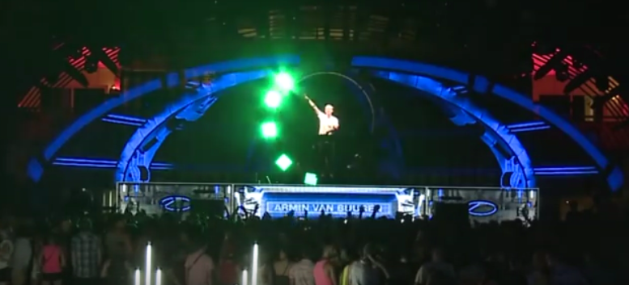
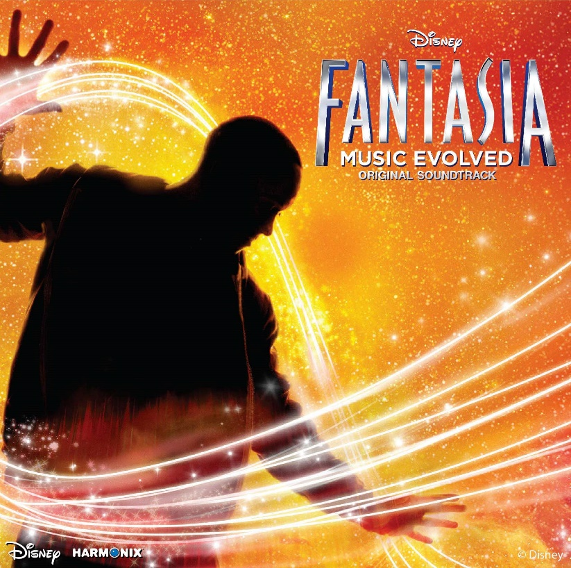
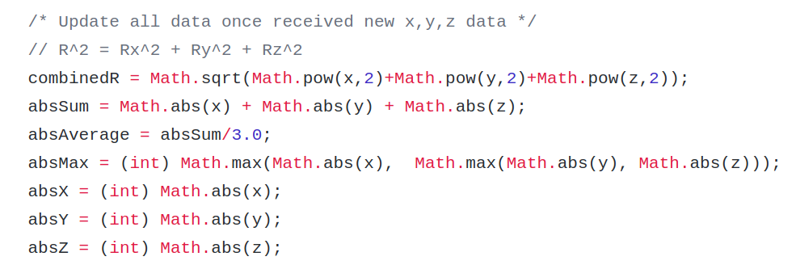
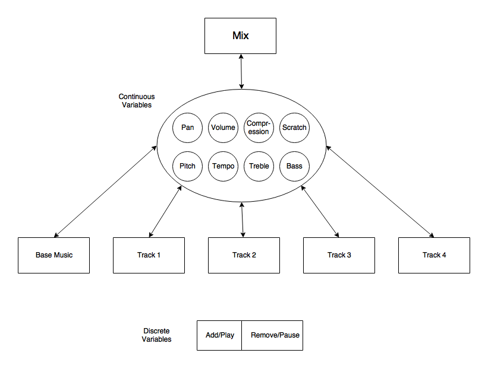
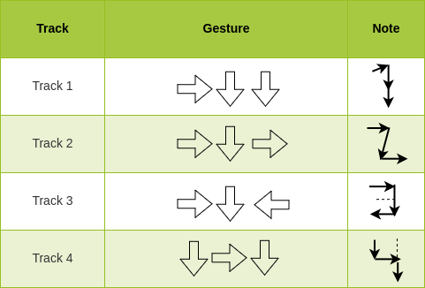
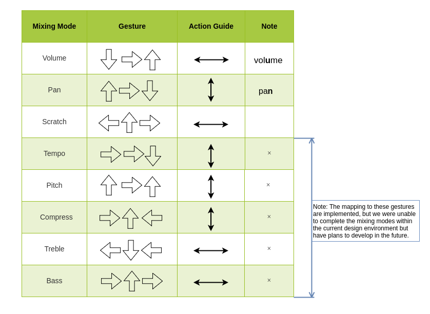

GBAM Music Wristband
Gesture Based Audio Mixing wearable technology
GBAM Music Wristband
A wearable technology project with Andy Chow and Michael Wonderley
Our team was always interested in new ways to interact with the environment. We started off with the idea to use a tactile sensor to read the texture of a surface that a user was touching in order to produce a sound. After doing some research, we realized that sensing surface texture was still a relatively new technology and it is not easy for us to get hands on an tactile sensor. Thus we changed our focus away from tactile and more towards a dancing or gesture focused sound creation device.
During our preliminary research we found products which did similar things, for example the MYO Gesture Control Armband, which was used on stage by DJ Armin Van Buuren, as well as Disney Fantasia: Music Evolved, an interaction performance for Fantasia Kinect game.
Our inspiration



Drawing inspirations from the two, We decided to design new ways for DJ to interact with music when performing on stage.
Our final prototype uses a MPU6050 sensor with Arduino. Accelerometer data was collected and analysed in order to determine the user's gesture, therefore changes the states in the program to manipulate music.
Understanding Gestures
Process of figuring out the algorithm
We followed a tutorial that walk us through the installation and required libraries of the MPU-6050 sensor, and demostrates the sensor by visualization in Processing. We used this visualization to make sense of the data, as the raw output of MPU-6050 is quite complicated. After some testing, we decided to use "readable_real_accel", the acceleration components with gravity removed, so that we can minimize the interference of gravity on our gesture regocnition.


Gesture Calculation
From there we began experimenting with the data to test the limits of the sensors and eventually found a method we felt accurately detected when a user has moved the device a direction. By taking the aggregate accelerometer data and summing it we have a strong indication of when the user has made a significant movement. This method also allows us to adjust the threshold for detection "significant" motion to adjust for a user's personal preference. We then take the largest absolute value of the 3 axes to calculate which direction the user is currently moving.
Limitation
This method fails to adjust for a constant gravity (which the accelerometer does read) which can switch axes as the user turns their arm. The tradeoff is that it is extremely easy to implement and saves us a lot of development time otherwise spent modeling the users arm to make decisions off of or implementing and training a machine learning algorithm.
Gesture Mapping
Using state machines

Once we had the program reading in user movements consistently we began setting it to buffer in each user movement and search a dictionary of known combinations for a match. When a match is found the program either enters the state for that key (for continuous operations such as changing volume) or executes the action directly (for binary actions like play and pause).
Currently the system exists such that a base music track plays and there are 5 options for tracks you can add to it. The aggregate of what is currently playing is called the "mix" and acts as the base state when you load into the program. Users can select a track or the whole mix and then select which action they wish to perform. For the continuous modulations users select the action they wish to perform and then use a back and forth or up and down motion much like a slider to select the desired value of the variable. For further details on which motions do what, see the Gesture Map documentation provided below.
Gesture Map
We designed gestures for each of the tracks and modes. Each gesture is identified by 3 movements, as indicated by the arrows shown below.
The gestures are designed to mimic the way the numbers are written. See below for the gestures to switch between tracks:
The gestures to enter different mixing modes are designed in a similar fashion: the gesture for pan mode and volume mode are basically writting the letter "n" for "pan" and "u" for "volume"; the gesture for scratch mode is designed to mimic the back and forth horizontal action of scratching.
The gestures are all mapped to their corresnponding modes. However due to time constraints, we were only able to finish 3 out of 8 mixing modes as shown above.
[1] K. M, "Myo gesture control Armband," in MYO, 2013. [Online]. Available: www.myo.com/. Accessed: Jul. 25, 2016.
[2] H. Morita, S. Hashimoto, and S. Ohteru, "A computer music system that follows a human conductor," Computer, vol. 24, no. 7, pp. 44–53, Jul. 1991.
[3] admin, "Understanding audio effects: An overview of types and uses," in Mixing and Mastering, Dubspot Blog, 2016. [Online]. Available: blog.dubspot.com/understanding-audio-effects-an-overview/. Accessed: Jul. 25, 2016.
[3] Jason, "Arduino MPU 6050 - best IMU sensor Tutorial," in Arduino projects, DIY Hacking, 2014. [Online]. Available: diyhacking.com/arduino-mpu-6050-imu-sensor-tutorial/. Accessed: Jul. 25, 2016.
[4] J. Tidey, "In the studio: Audio effects explained (includes audio samples)," 2014. [Online]. Available: www.prosoundweb.com/article/in_the_studio_audio_effects_explained_includes_audio_samples/. Accessed: Jul. 25, 2016.
[5] Arduino, "Arduino playground - MPU-6050," in Arduino Playground, 2016. [Online]. Available: playground.arduino.cc/Main/MPU-6050. Accessed: Jul. 25, 2016.
Libraries / Software Used:Arduino - www.arduino.cc
Processing - processing.org
Minim - code.compartmental.net/tools/minim
I2C - github.com/jrowberg/i2cdevlib
VirtualDJ - www.virtualdj.com